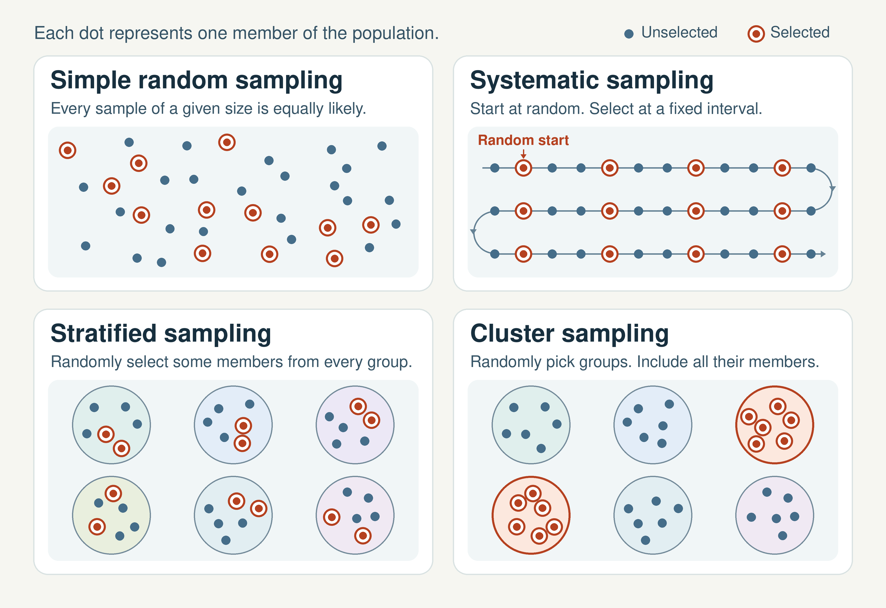

Section Statistics, Data, and Sampling Methods
Subsection Introduction
Definition 267 Data.
Questions to Ask About a Statistical Claim.
-
Who is the claim about?
-
Who supplied the data, and how were they selected?
-
What was measured or asked?
-
What conclusion do the data support?
Example 268 Reading a Headline.
A campus newspaper reports that 70% of students would use an evening shuttle. The reporter asked 100 students leaving the library after 8 p.m., and 70 said yes. Rewrite the headline so that it describes the people who were surveyed. Explain why the percentage for all enrolled undergraduates could be different.
Subsection Populations and Samples
Definition 269 Population.
Definition 270 Sample.
Definition 271 Census.
Definition 272 Parameter.
Definition 273 Statistic.
Example 274 Identifying Terms.
A college has 1,200 enrolled undergraduates. Staff randomly select 120 students from the enrollment roster. All 120 respond, and 78 say they would use an evening shuttle at least once a week.
-
Identify the population and sample.
-
Identify any parameters discussed.
-
Identify any statistics discussed.
Example 275 Library Survey.
A county library wants to know what percentage of its current cardholders borrowed an e-book in the past 30 days. It randomly selects 80 cardholders from the list of those with an email address on file. All 80 respond, and 35% report borrowing an e-book during that time.
-
Identify the target population and the sample.
-
Is 35% a parameter or a statistic? Explain.
-
What would the library need to do to conduct a census of its target population?
Subsection Categorizing Data
Definition 276 Variable.
Definition 277 Categorical Data.
Definition 278 Quantitative Data.
| Variable | One response | Type |
|---|---|---|
| Primary way of getting to campus | Bus | Categorical |
| Home ZIP code | 48710 | Categorical |
| Shuttle interest (1 to 5) | 4 | Categorical (ordered) |
| Number of evening trips last week | 3 | Quantitative |
| Travel time to campus | 18 minutes | Quantitative |
A ZIP code uses digits as a label for a location. The interest scale goes from 1 (low) to 5 (high), so a 4 shows greater interest than a 2. Interpreting the gap between the ratings would require knowing how much interest each step represents. For travel time, a difference of 5 minutes has a clear meaning.
Example 280 Classify the Variable.
For each variable recorded by the campus parking office, decide whether it is categorical or quantitative. Explain what the recorded values represent.
-
Type of parking permit purchased.
-
Six-digit parking permit number.
-
Number of days the student parked on campus last week.
-
Amount the student paid for parking this semester.
-
Parking satisfaction rated as poor, fair, good, or excellent.
Subsection Sampling Methods
Definition 281 Simple Random Sampling.
Definition 282 Systematic Sampling.
Definition 283 Statified Sampling.
Definition 284 Cluster Sampling.

Orange rings mark selected members. In simple random sampling, every sample of a given size is equally likely. Systematic sampling follows an ordered path at a fixed interval after a random start. Stratified sampling selects some members from every group. Cluster sampling selects every member of the chosen groups.
Definition 285 Quota Sampling.
Definition 286 Convenience Sampling.
Definition 287 Voluntary Response Sampling.
Example 288 Identify the Sampling Method.
A city wants to estimate the percentage of households that use a public park at least once a week. Name the sampling method in each plan and point to the detail that identifies it.
-
Randomly select 80 households from a complete list of city households.
-
Divide the city into neighborhoods and randomly select a proportional number of households from each neighborhood.
-
Randomly select four city blocks and survey every household on those blocks.
-
Start at a randomly chosen position among the first 15 entries on a household list, then select every 15th entry.
-
In each neighborhood, approach households that are easy to reach until 20 households from that neighborhood have responded.
-
Survey households on the streets nearest the park.
-
Post an open link on the city website and collect responses from households that choose to answer.
How could using only the streets nearest the park affect the estimate of the citywide percentage?
![Runestone Academy logo]()
![MathJax logo]()